Documentation
Dokumentasi
Sisaldo
Sisaldo
A spending and credit-card tracker for Android. It works out what each card owes, how much room is left on it, and how much money you genuinely have free once everything you have committed to is counted. This page documents all of it.
Pencatat pengeluaran dan kartu kredit untuk Android. Aplikasi ini menghitung tagihan tiap kartu, sisa limit yang masih bisa dipakai, dan berapa uang yang benar-benar bebas dipakai setelah semua yang sudah Anda rencanakan ikut dihitung. Halaman ini mendokumentasikan semuanya.
✓ Sisaldo works fully offline
✓ Sisaldo bekerja sepenuhnya offline
Everything lives in a single database file on your phone. There is no account to create, no server that holds your data, and nothing is uploaded anywhere. Put the phone in aeroplane mode and every feature still works. The only times Sisaldo touches the internet at all are if you turn on Google Drive sync, or when it checks for an update. Both are optional, and both are described below.
Semua data ada di satu berkas basis data di ponsel Anda. Tidak ada akun yang perlu dibuat, tidak ada server yang menyimpan data Anda, dan tidak ada apa pun yang diunggah ke mana pun. Aktifkan mode pesawat dan semua fitur tetap berjalan. Sisaldo hanya menyentuh internet kalau Anda menyalakan sinkronisasi Google Drive, atau saat memeriksa pembaruan. Keduanya opsional dan dijelaskan di bawah.
1What Sisaldo isApa itu Sisaldo
Sisaldo replaced three spreadsheets that did this job by hand. It is built around the thing those got wrong, which is the difference between a charge that has happened and one you have merely committed to.
Sisaldo menggantikan tiga berkas spreadsheet yang dulu dikerjakan manual. Aplikasi ini dibangun di sekitar hal yang salah di spreadsheet itu: beda antara transaksi yang sudah benar-benar terjadi dan yang baru Anda rencanakan.
It does
Yang bisa dilakukan
- Track spending across any number of credit cards and cash accounts
- Work out what each card owes, and how much of its limit is still free
- Handle several cards that share one credit limit between them
- Track progress toward a card's perk, by usage count or by spend threshold
- Record money you paid on someone else's behalf, and who owes it back
- Handle purchases in another currency, at the rate you were charged
- Export and import your whole history as one file
- Mencatat pengeluaran dari berapa pun jumlah kartu kredit dan akun tunai
- Menghitung tagihan tiap kartu dan sisa limit yang masih bebas
- Menangani beberapa kartu yang berbagi satu limit kredit
- Melacak progres menuju perk kartu, lewat jumlah transaksi atau ambang belanja
- Mencatat uang yang Anda bayarkan untuk orang lain, dan siapa yang harus mengembalikan
- Menangani pembelian mata uang lain, dengan kurs yang dikenakan ke Anda
- Mengekspor dan mengimpor seluruh riwayat sebagai satu berkas
It does not
Yang tidak dilakukan
- Connect to your bank. Every entry is typed in by you.
- Sync automatically between phones, unless you turn on Drive sync
- Run on iOS or in a browser. Android only, for now.
- Terhubung ke bank Anda. Setiap entri Anda masukkan sendiri.
- Menyinkronkan otomatis antar ponsel, kecuali Anda menyalakan sinkronisasi Drive
- Berjalan di iOS atau di browser. Baru Android untuk sekarang.
The app's own screens are in English
Tampilan aplikasinya berbahasa Inggris
This documentation is available in Bahasa Indonesia, but the app itself is not translated yet. Where this guide names a button, it gives the English label you will actually see on screen.
Dokumentasi ini tersedia dalam Bahasa Indonesia, tetapi aplikasinya sendiri belum diterjemahkan. Setiap kali panduan ini menyebut sebuah tombol, yang dipakai adalah label bahasa Inggris yang benar-benar muncul di layar.
2Offline, data and privacyOffline, data, dan privasi
This section exists because it is the first thing anyone sensibly asks of a money app. The short answer is at the top of this page; here is the detail.
Bagian ini ada karena inilah hal pertama yang wajar ditanyakan orang tentang aplikasi keuangan. Jawaban singkatnya ada di bagian atas halaman ini; berikut rinciannya.
| QuestionPertanyaan | AnswerJawaban |
|---|---|
| Where is my data kept?Di mana data saya disimpan? | One SQLite file in the app's private storage on your phone.Satu berkas SQLite di penyimpanan privat aplikasi di ponsel Anda. |
| Do I need an account?Perlu bikin akun? | No. There is no sign-up and no server that knows you exist.Tidak. Tidak ada pendaftaran dan tidak ada server yang tahu Anda ada. |
| Does it work with no signal?Bisa jalan tanpa sinyal? | Yes, completely. Nothing needs a connection.Ya, sepenuhnya. Tidak ada yang butuh koneksi. |
| What can reach the internet?Apa yang bisa mengakses internet? | Only Drive sync (if you connect it) and the update check.Hanya sinkronisasi Drive (kalau Anda hubungkan) dan pemeriksaan pembaruan. |
| Any analytics or tracking?Ada analitik atau pelacakan? | None.Tidak ada. |
| Are there ads?Ada iklan? | None.Tidak ada. |
| If I uninstall?Kalau saya hapus aplikasinya? | The data goes with it. Export a backup first.Datanya ikut hilang. Ekspor cadangan dulu. |
Because there is no server, there is also no recovery. If you lose the phone and have no backup, the history is gone. Section 7 covers how to avoid that, and it is the one piece of housekeeping worth doing early.
Karena tidak ada server, tidak ada pemulihan juga. Kalau ponsel hilang dan Anda tidak punya cadangan, riwayatnya habis. Bagian 7 menjelaskan cara menghindarinya, dan itu satu-satunya pekerjaan rumah yang sebaiknya dilakukan cepat.
3InstallingMemasang
Sisaldo is not on the Play Store. You download an APK and install it yourself, which Android calls sideloading and warns you about.
Sisaldo tidak ada di Play Store. Anda mengunduh APK dan memasangnya sendiri, yang oleh Android disebut sideloading dan akan diperingatkan.
-
Download the APK on the phone
Unduh APK di ponselnya
Use the button at the top of this page. It always points at the newest release, so there is no version to choose.
Pakai tombol di bagian atas halaman ini. Tombolnya selalu mengarah ke rilis terbaru, jadi tidak ada versi yang perlu dipilih.
-
Allow your browser to install apps
Izinkan browser memasang aplikasi
Android asks once, for that one app. Approve it.
Android bertanya sekali, untuk aplikasi itu saja. Setujui.
-
Tap through the Play Protect warning
Lewati peringatan Play Protect
It will say the developer is unrecognised. The note below explains exactly why, so you can decide with the facts.
Akan muncul pesan bahwa pengembangnya tidak dikenali. Catatan di bawah menjelaskan alasannya, supaya Anda bisa memutuskan dengan informasi yang jelas.
-
Open it
Buka aplikasinya
The app starts genuinely empty: no accounts, no cards, no sample data.
Aplikasi dimulai benar-benar kosong: tanpa akun, tanpa kartu, tanpa data contoh.
Why Android warns, stated plainly
Kenapa Android memperingatkan, dijelaskan terbuka
The APK is signed with a debug key, and that key is a shared one from the development template rather than a private key belonging to this app. So Android cannot confirm who published it, and neither can you. The key's fingerprint is what the Google sign-in used for Drive sync is registered against, which is why it has not been changed. The practical risk is small (Drive access is limited to a hidden folder only this app can see, and you still approve the consent screen), but it is real, and you should weigh it rather than take it on trust. If you are not comfortable with that, do not install this.
APK ini ditandatangani dengan kunci debug, dan kunci itu adalah kunci bersama dari templat pengembangan, bukan kunci privat milik aplikasi ini. Jadi Android tidak bisa memastikan siapa yang menerbitkannya, dan Anda juga tidak. Sidik jari kunci itulah yang terdaftar untuk login Google yang dipakai sinkronisasi Drive, itu sebabnya kunci ini belum diganti. Risiko praktisnya kecil (akses Drive terbatas pada satu folder tersembunyi yang hanya bisa dilihat aplikasi ini, dan Anda masih harus menyetujui layar izin), tetapi risikonya nyata. Timbang sendiri, jangan hanya percaya. Kalau Anda tidak nyaman, jangan pasang.
4Setting upMenyiapkan
Sisaldo ships with nothing configured, because the figures are only worth something if the cards and limits behind them are yours.
Sisaldo datang tanpa konfigurasi apa pun, karena angkanya hanya berguna kalau kartu dan limit di belakangnya memang milik Anda.
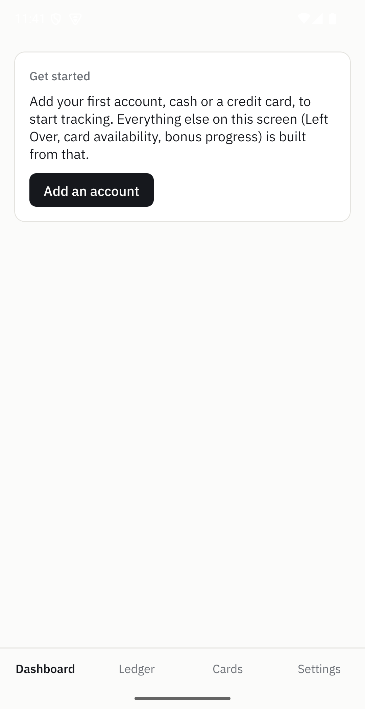
4.1Accounts and cardsAkun dan kartu
An account is either a credit card or cash. A card
needs a limit; cash does not have one. Go to Settings →
Accounts → Add account.
Akun bisa berupa kartu kredit atau tunai. Kartu
butuh limit; tunai tidak. Buka Settings → Accounts
→ Add account.
The colour you pick is not decoration. It tags that account everywhere it appears,
so a glance at the Ledger tells you which card a row belongs to without reading the
name. Reordering the list with the arrows changes the order used on the Dashboard
and in every picker. Deactivate keeps all of a card's history but stops
it appearing when you add something new, which is what you want for a card you have
closed.
Warna yang Anda pilih bukan hiasan. Warna itu menandai akun tersebut di mana pun ia
muncul, jadi sekali lihat Ledger Anda langsung tahu satu baris milik kartu mana tanpa
membaca namanya. Mengatur ulang urutan dengan tanda panah mengubah urutan yang dipakai
di Dashboard dan di semua pilihan. Deactivate menyimpan seluruh riwayat
kartu tetapi membuatnya tidak lagi muncul saat Anda menambah entri baru, yang cocok
untuk kartu yang sudah Anda tutup.
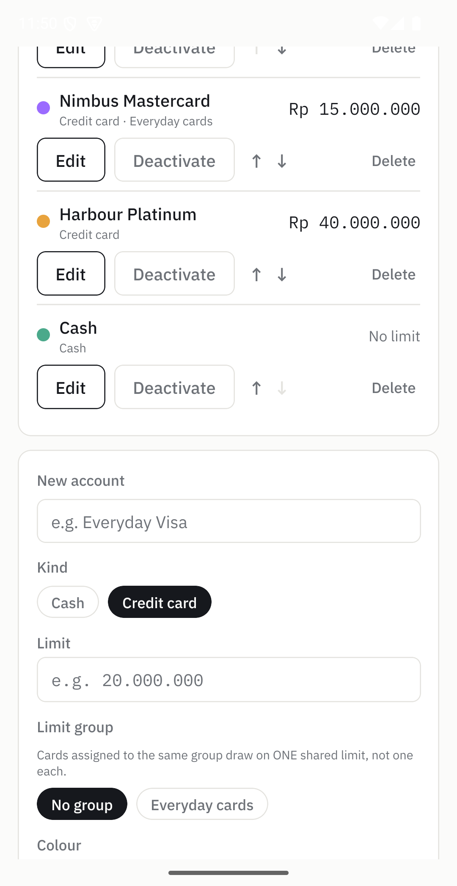
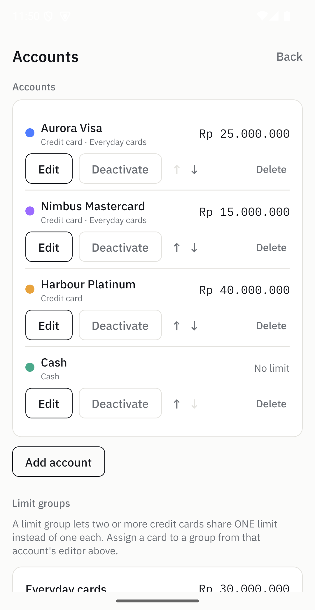
4.2Shared limitsLimit bersama
Some banks issue several cards that all draw on one credit line. Adding their limits together would tell you that you have far more room than you really do. A limit group holds the real shared ceiling, and availability is then reported for the group instead of per card.
Beberapa bank menerbitkan beberapa kartu yang semuanya menarik dari satu plafon kredit. Menjumlahkan limitnya akan membuat Anda merasa punya ruang jauh lebih besar daripada kenyataannya. Limit group menyimpan plafon bersama yang sebenarnya, dan sisa limit lalu dilaporkan untuk grup itu, bukan per kartu.
Create one under Settings → Accounts →
Add limit group, then assign a card to it from that card's own editor. In
the example below, two cards with limits of 25 and 15 million share a ceiling of 30
million, so the group is what gets tracked.
Buat lewat Settings → Accounts →
Add limit group, lalu tetapkan kartu ke grup itu dari editor kartunya
sendiri. Pada contoh di bawah, dua kartu dengan limit 25 dan 15 juta berbagi plafon 30
juta, jadi yang dilacak adalah grupnya.
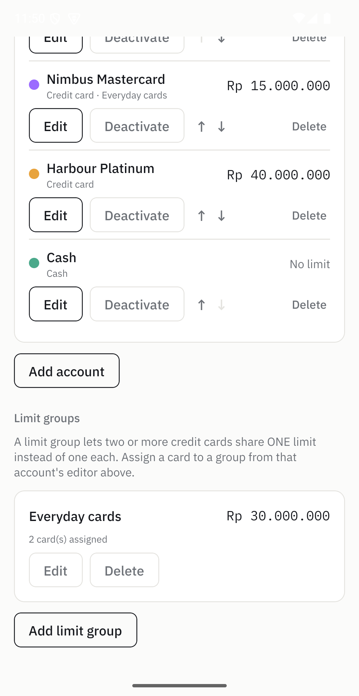
4.3Bonus rulesAturan bonus
Many cards give something back for being used a set number of times, or for spending
past a threshold, within each statement period. A bonus rule describes that once, and
the Dashboard then shows how close you are. One rule per card, under
Settings → Rules.
Banyak kartu memberi imbalan kalau dipakai sejumlah kali tertentu, atau kalau belanja
melewati ambang tertentu, dalam satu periode tagihan. Aturan bonus menjelaskan hal itu
sekali, lalu Dashboard menunjukkan seberapa dekat Anda. Satu aturan per kartu, di
Settings → Rules.
| FieldKolom | What it meansArtinya |
|---|---|
Count of usages |
Counts qualifying purchases. Earned at "at least N purchases".Menghitung jumlah transaksi yang memenuhi syarat. Didapat pada "minimal N transaksi". |
Total amount |
Adds up qualifying purchases instead of counting them.Menjumlahkan nilai transaksi yang memenuhi syarat, bukan menghitung banyaknya. |
Target |
The number of usages, or the amount, you are aiming at.Jumlah pemakaian, atau nilai, yang Anda tuju. |
Minimum per-usage amount |
A purchase below this never counts. Zero means every purchase counts.Transaksi di bawah nilai ini tidak pernah dihitung. Nol berarti semua transaksi dihitung. |
Reset day |
The day of the month the count starts over. Match it to your statement date, or use 1 for a calendar month.Tanggal saat hitungan dimulai ulang. Samakan dengan tanggal cetak tagihan Anda, atau pakai 1 untuk satu bulan kalender. |
Excludes administration rows |
Leaves fees out, since banks do not count them.Mengeluarkan biaya-biaya, karena bank tidak menghitungnya. |
Excludes refunded spends |
A purchase you were refunded for stops counting.Transaksi yang dananya sudah dikembalikan berhenti dihitung. |
Only dated entries count toward a rule, and only ones inside the current reset window. A purchase you have planned but not yet been charged for has not reached the card, so the bank has not counted it either.
Hanya entri bertanggal yang dihitung untuk sebuah aturan, dan hanya yang berada di dalam periode reset saat ini. Transaksi yang baru Anda rencanakan dan belum ditagihkan berarti belum sampai ke kartu, jadi bank juga belum menghitungnya.
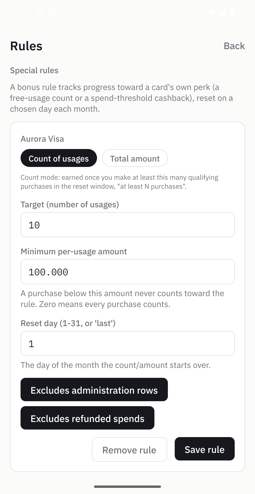
4.4Current moneyUang saat ini
This is the one figure Sisaldo cannot work out for itself: what is in your wallet and
your bank right now. Set it under Settings →
Update current money, and everything about what you have left is
calculated from there.
Ini satu-satunya angka yang tidak bisa dihitung sendiri oleh Sisaldo: berapa isi dompet
dan rekening Anda sekarang. Aturlah di Settings →
Update current money, dan semua perhitungan tentang sisa uang Anda
bertumpu pada angka itu.
You do not need to keep it constantly up to date. Set it again whenever it has drifted, typically after payday. The app records the date you set it and applies everything recorded after that on top, so it stays meaningful in between.
Anda tidak perlu terus-menerus memperbaruinya. Setel ulang kapan pun angkanya sudah menyimpang, biasanya setelah gajian. Aplikasi mencatat tanggal Anda menyetelnya lalu menerapkan semua yang tercatat setelah itu di atasnya, jadi angkanya tetap bermakna di antara dua penyetelan.
5Daily usePenggunaan harian
5.1The DashboardDashboard
Left Over is the number that matters: your current money, plus what people owe you, minus everything you owe across every card, including entries you have planned but not yet been charged for. The working is printed underneath it, so you can always see where the figure came from.
Left Over adalah angka yang paling penting: uang Anda saat ini, ditambah yang orang lain utangi ke Anda, dikurangi semua tagihan di seluruh kartu, termasuk entri yang baru direncanakan dan belum ditagihkan. Rinciannya dicetak di bawahnya, jadi Anda selalu bisa melihat asal angkanya.
- Today is what you have spent since midnight.
- Card availability is the room left on each card or shared group, counting only charges that have actually happened.
- Bonus progress shows each rule as filled dots and a count.
- Owed to you groups anything you paid on someone's behalf, by person.
- Today adalah pengeluaran Anda sejak tengah malam.
- Card availability adalah sisa ruang tiap kartu atau grup limit, hanya menghitung transaksi yang sudah benar-benar terjadi.
- Bonus progress menampilkan tiap aturan sebagai titik terisi dan angka.
- Owed to you mengelompokkan uang yang Anda bayarkan untuk orang lain, per orang.
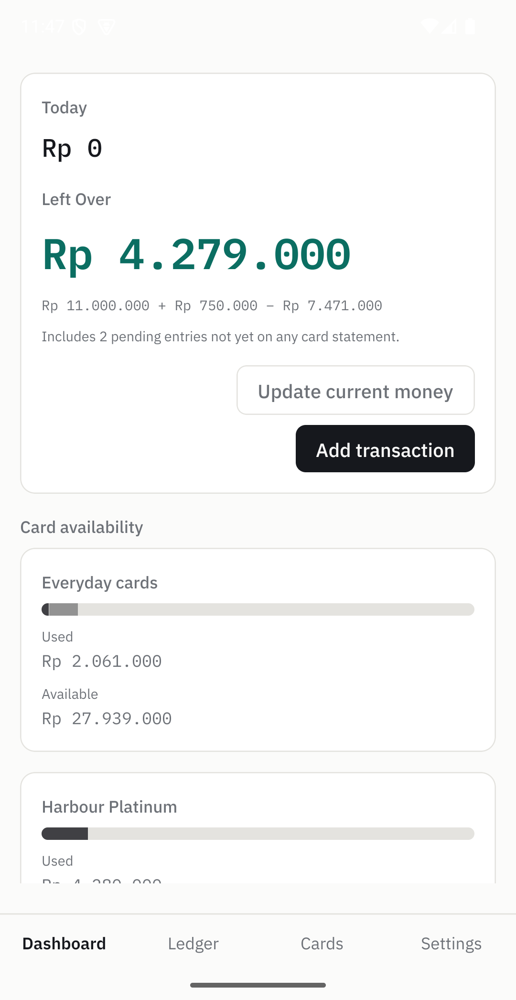
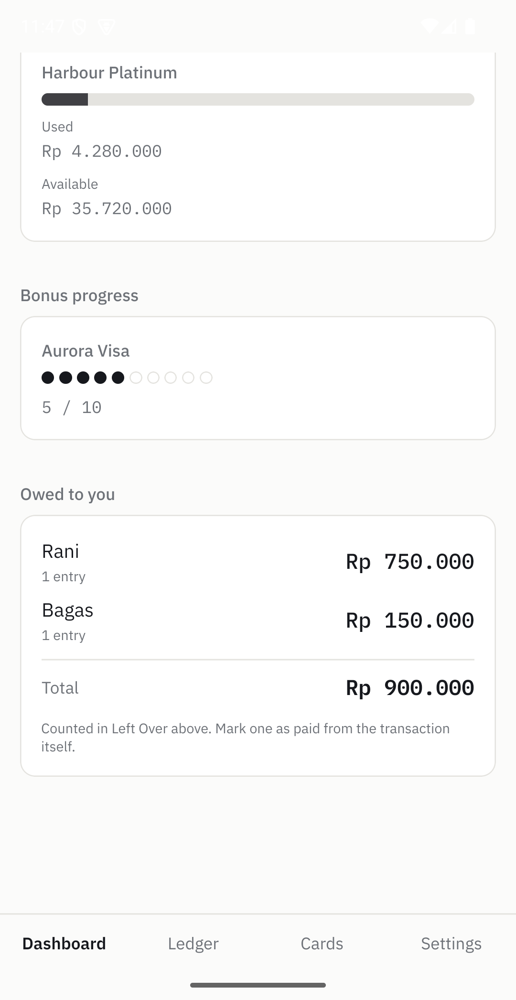
5.2Adding an entryMenambah entri
Add transaction on the Dashboard, or New on the Ledger.
Amount, which account, and what it was for is the whole required set; everything else
has a sensible default.
Add transaction di Dashboard, atau New di Ledger. Nominal,
akun mana, dan untuk apa: itu semua yang wajib; sisanya sudah ada nilai bawaan yang
wajar.
For a purchase in another currency, set Currency and the
rate you were actually charged at. The rupiah figure is worked out once
and kept, so a later change in the exchange rate never rewrites your history.
Untuk pembelian dalam mata uang lain, isi Currency dan rate
yang benar-benar dikenakan ke Anda. Nilai rupiahnya dihitung sekali lalu disimpan,
sehingga perubahan kurs di kemudian hari tidak pernah mengubah riwayat Anda.
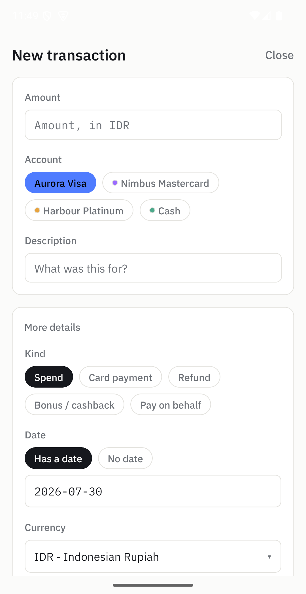
5.3Entry kindsJenis entri
Getting the kind right is what lets the app tell "I owe less now" apart from "I spent less". This is the full list.
Memilih jenis yang tepat itulah yang membuat aplikasi bisa membedakan "tagihan saya berkurang" dari "pengeluaran saya berkurang". Ini daftar lengkapnya.
| KindJenis | Use it forDipakai untuk | EffectEfeknya |
|---|---|---|
Spend |
An ordinary purchase.Pembelian biasa. | Increases what the card owes.Menambah tagihan kartu. |
Card payment |
Paying your bill.Membayar tagihan Anda. | Reduces what the card owes, and reduces your money.Mengurangi tagihan kartu, dan mengurangi uang Anda. |
Refund |
A purchase reversed by the merchant.Transaksi yang dibatalkan penjual. | Reduces what the card owes. Can exclude the original from a bonus rule.Mengurangi tagihan kartu. Bisa mengeluarkan transaksi aslinya dari aturan bonus. |
Bonus / cashback |
Credit the bank gave you.Kredit yang diberikan bank. | Reduces what the card owes.Mengurangi tagihan kartu. |
Pay on behalf |
You paid, someone else owes you.Anda yang bayar, orang lain berutang ke Anda. | Increases what the card owes, and adds to "Owed to you".Menambah tagihan kartu, dan masuk ke "Owed to you". |
5.4EditingMengubah
Tapping any row in the Ledger opens it in a sheet you can correct in place, without leaving the list: change the amount, move it to another card, or delete it.
Menyentuh baris mana pun di Ledger membukanya dalam panel yang bisa Anda perbaiki di tempat, tanpa keluar dari daftar: ubah nominal, pindahkan ke kartu lain, atau hapus.
The Has a date / No date toggle here is the most
consequential control in the app. Section 6.1 explains exactly what it changes.
Sakelar Has a date / No date di sini adalah kendali paling
berpengaruh di seluruh aplikasi. Bagian 6.1 menjelaskan persisnya apa yang berubah.
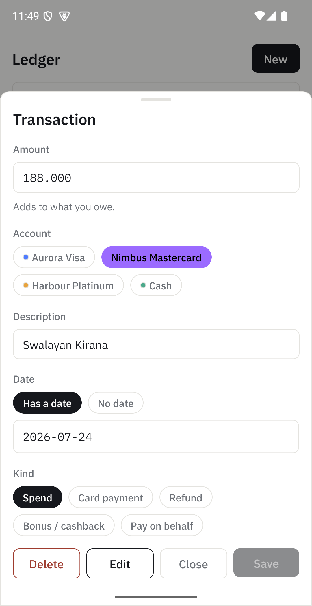
5.5The LedgerLedger
The Ledger opens on the current month, because that is almost always what you want, and tells you how many of your total entries it is showing. Planned entries sit at the top marked Pending, since they have no date to sort by.
Ledger terbuka pada bulan berjalan, karena itu yang hampir selalu Anda butuhkan, dan memberi tahu berapa dari total entri Anda yang sedang ditampilkan. Entri yang baru direncanakan berada di atas dengan tanda Pending, karena tidak punya tanggal untuk diurutkan.
The Debit and Credit totals at the bottom are for exactly what is on screen, so they follow whatever you have filtered or searched. Filter by account, kind, or pending status, and set a date range to look at any period. That makes this the quickest way to answer "how much did this card cost me in May".
Total Debit dan Credit di bagian bawah dihitung tepat dari apa yang tampil di layar, jadi ikut berubah sesuai filter atau pencarian Anda. Filter berdasarkan akun, jenis, atau status pending, dan atur rentang tanggal untuk melihat periode apa pun. Ini cara tercepat menjawab "kartu ini menghabiskan berapa di bulan Mei".
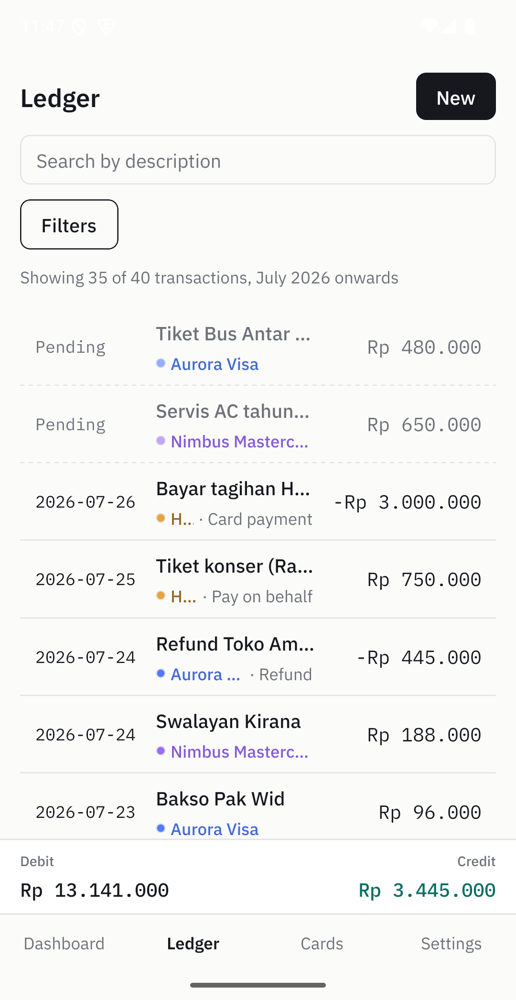
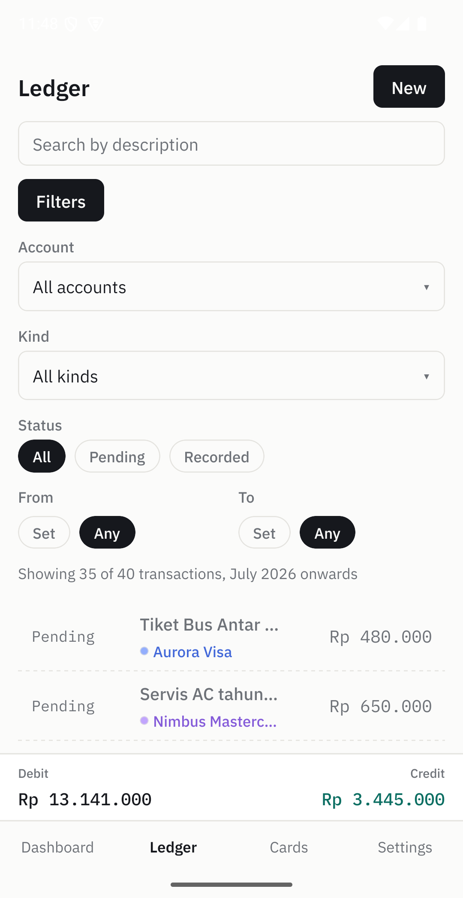
5.6Cards and payeesKartu dan penerima
The Cards tab gives one card at a time: what it owes all-time, its progress toward its perk, and a reconciliation note. That last one is free text for what your bank app said and when, so the next time the app and the statement disagree you know when they last agreed.
Tab Cards menampilkan satu kartu sekaligus: total tagihannya sepanjang waktu, progres menuju perk-nya, dan reconciliation note. Yang terakhir adalah catatan bebas tentang apa yang ditampilkan aplikasi bank Anda dan kapan, jadi saat nanti aplikasi dan tagihan tidak cocok, Anda tahu kapan terakhir keduanya cocok.
A payee is a name to attach to a pay-on-behalf entry, so "Owed to you"
can group by person. You can create one straight from the transaction form;
Settings → Payees is for renaming and tidying up.
Payee adalah nama yang dilekatkan ke entri pay-on-behalf, supaya
"Owed to you" bisa dikelompokkan per orang. Anda bisa membuatnya langsung dari formulir
transaksi; Settings → Payees untuk mengganti nama dan
merapikan.
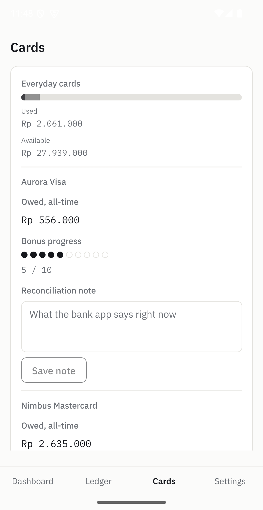
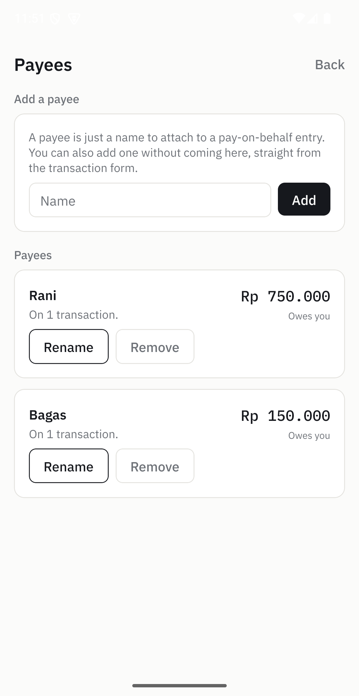
6How the numbers workCara angkanya dihitung
Read this section if you ever want to check the app rather than trust it. Everything here is a deliberate decision, not an accident.
Baca bagian ini kalau Anda ingin memeriksa aplikasinya, bukan hanya mempercayainya. Semua di sini adalah keputusan yang disengaja, bukan kebetulan.
6.1Dated and undatedBertanggal dan tanpa tanggal
An entry either has a date or it does not, and that single distinction decides which totals it is allowed to affect. An entry with no date is a plan: money you have committed, that no card has been charged for yet.
Sebuah entri punya tanggal atau tidak, dan perbedaan tunggal itulah yang menentukan total mana saja yang boleh dipengaruhinya. Entri tanpa tanggal adalah rencana: uang yang sudah Anda komitmenkan, tetapi belum ditagihkan ke kartu mana pun.
It happened
Sudah terjadi
The card has been charged, or the money has moved.
Kartu sudah ditagih, atau uangnya sudah berpindah.
- countsdihitungtoward what you oweuntuk tagihan Anda
- countsdihitungagainst available limitterhadap sisa limit
- countsdihitungtoward a bonus ruleuntuk aturan bonus
- countsdihitungin Left Overdi Left Over
It is a plan
Masih rencana
Committed, but nothing has reached the card yet.
Sudah dikomitmenkan, tetapi belum sampai ke kartu.
- countsdihitungtoward what you oweuntuk tagihan Anda
- no effecttidak berefekon available limitpada sisa limit
- no effecttidak berefekon a bonus rulepada aturan bonus
- countsdihitungin Left Overdi Left Over
6.2Why availability and what you owe disagreeKenapa sisa limit dan tagihan tidak cocok
They answer different questions. Your available credit is a fact about the card, so only real charges reduce it. What you owe is a fact about your money, and a bill you have already decided to pay is owed whether or not it has landed. Both figures are correct. Expecting them to match is the mistake.
Keduanya menjawab pertanyaan yang berbeda. Sisa limit adalah fakta tentang kartu, jadi hanya transaksi nyata yang menguranginya. Tagihan adalah fakta tentang uang Anda, dan pengeluaran yang sudah Anda putuskan untuk dibayar tetap terhitung sebagai kewajiban, sudah masuk atau belum. Kedua angka itu benar. Yang salah adalah mengharapkan keduanya sama.
6.3Why cash moves nothingKenapa tunai tidak mengubah apa pun
Cash accounts always report zero owed, and a cash entry does not change your current money either. That sounds wrong until you remember where current money comes from: you type it in by looking at your wallet, and your wallet already reflects the cash you spent. Applying those entries again would subtract the same rupiah twice. Cash is tracked so you can see where it went, not to move the total.
Akun tunai selalu melaporkan tagihan nol, dan entri tunai juga tidak mengubah uang Anda saat ini. Kedengarannya salah, sampai Anda ingat dari mana angka uang saat ini berasal: Anda mengisinya dengan melihat dompet, dan dompet Anda sudah mencerminkan uang tunai yang terpakai. Menerapkan entri itu sekali lagi berarti mengurangi rupiah yang sama dua kali. Tunai dicatat supaya Anda bisa melihat ke mana perginya, bukan untuk mengubah totalnya.
One consequence worth knowing: cash you lent someone still appears under "Owed to you", but is left out of the amount added back into Left Over, for the same reason.
Satu akibat yang perlu diketahui: uang tunai yang Anda pinjamkan tetap muncul di "Owed to you", tetapi tidak ikut ditambahkan kembali ke Left Over, dengan alasan yang sama.
6.4Administration entriesEntri biaya administrasi
Bank fees (a notification fee, a stamp duty, a statement fee) are marked as administration entries. They still count toward what you owe, because you do owe them, but a bonus rule can exclude them, because banks do not count fees toward a perk.
Biaya bank (biaya notifikasi, bea materai, biaya cetak tagihan) ditandai sebagai entri administrasi. Biaya itu tetap dihitung sebagai tagihan, karena memang harus Anda bayar, tetapi aturan bonus bisa mengeluarkannya, karena bank tidak menghitung biaya sebagai bagian dari perk.
The flag is stored on each entry and you can change it per entry. The app suggests it from a list of common fee names when you type a description, but nothing re-classifies your history later: editing that list never changes entries you already saved.
Tanda ini disimpan di masing-masing entri dan bisa Anda ubah per entri. Aplikasi menyarankannya dari daftar nama biaya yang umum saat Anda menulis keterangan, tetapi tidak ada yang mengklasifikasi ulang riwayat Anda di kemudian hari: mengubah daftar itu tidak pernah mengubah entri yang sudah tersimpan.
6.5Nothing is stored as a totalTidak ada total yang disimpan
Every balance, every availability figure and every rule count is recalculated from your entries each time it is shown. None of them is saved anywhere. That is slightly more work for the app, and it is the reason it cannot quietly drift out of agreement with itself, which is exactly what the spreadsheets it replaced did.
Setiap saldo, setiap angka sisa limit, dan setiap hitungan aturan dihitung ulang dari entri Anda setiap kali ditampilkan. Tidak ada satu pun yang disimpan. Itu memang sedikit lebih berat bagi aplikasi, dan justru itu sebabnya angka-angkanya tidak bisa perlahan jadi tidak konsisten satu sama lain, hal yang persis terjadi pada spreadsheet yang digantikannya.
7Backup and syncPencadangan dan sinkronisasi
Since nothing is on a server, a backup is the only thing standing between you and losing
your history with the phone. Both options are under Settings →
System settings.
Karena tidak ada apa pun di server, cadangan adalah satu-satunya hal yang mencegah
riwayat Anda hilang bersama ponselnya. Kedua pilihan ada di Settings →
System settings.
Export and import a file
Ekspor dan impor berkas
Export backup writes everything to one file you control, ready for Drive,
email, or wherever you keep things. Import backup reads one back.
Export backup menulis semuanya ke satu berkas yang Anda kendalikan, siap
untuk Drive, email, atau di mana pun Anda menyimpannya. Import backup
membacanya kembali.
Importing merges, it does not replace. Importing the same file twice changes nothing, and importing a file from another phone combines the two rather than one overwriting the other. Before it does anything, it tells you how many entries the file holds and how many are new to this device.
Impor bersifat menggabungkan, bukan mengganti. Mengimpor berkas yang sama dua kali tidak mengubah apa pun, dan mengimpor berkas dari ponsel lain menggabungkan keduanya, bukan saling menimpa. Sebelum melakukan apa pun, aplikasi memberi tahu berapa entri yang ada di berkas itu dan berapa yang baru bagi perangkat ini.
Google Drive sync
Sinkronisasi Google Drive
Optional, and off until you connect it. It uses a hidden, app-only folder in your own Drive, so this app cannot read anything else in there, and the sign-in token stays in the device's secure keychain. This is the one feature that deliberately uses the network.
Opsional, dan mati sampai Anda menghubungkannya. Fitur ini memakai folder tersembunyi khusus aplikasi di Drive Anda sendiri, jadi aplikasi ini tidak bisa membaca apa pun yang lain di sana, dan token login tetap di keychain aman perangkat. Ini satu-satunya fitur yang memang memakai jaringan.
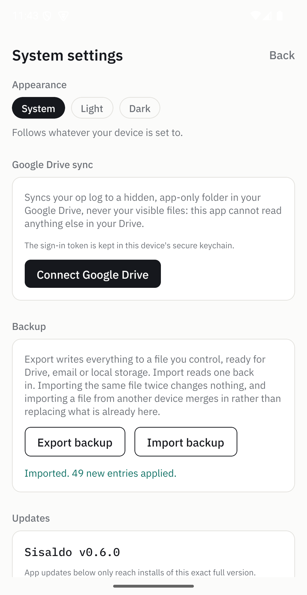
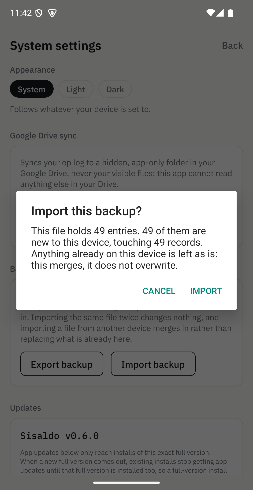
8UpdatesPembaruan
There are two ways a change reaches your phone, and Settings shows both under one heading so you never have to work out which one you need.
Ada dua cara sebuah perubahan sampai ke ponsel Anda, dan Settings menampilkan keduanya di bawah satu judul supaya Anda tidak perlu menebak mana yang dibutuhkan.
App updates |
Full app version |
|
|---|---|---|
| DeliversMembawa | Screens, wording, calculationsTampilan, teks, perhitungan | A whole new APKAPK baru seutuhnya |
| ArrivesDatang | Quietly, in the backgroundDiam-diam, di latar belakang | When you check, or from this pageSaat Anda memeriksa, atau dari halaman ini |
| You doYang Anda lakukan | Tap Restart to update, when it suits youKetuk Restart to update, kapan pun Anda mau | Tap through a download and an installIkuti proses unduh dan pasang |
| SizeUkuran | SmallKecil | Around 100 MBSekitar 100 MB |
Neither happens without you launching the app, and neither sends any of your data anywhere. An update check asks "is there something newer" and nothing else.
Keduanya tidak terjadi kecuali Anda membuka aplikasinya, dan keduanya tidak mengirim data Anda ke mana pun. Pemeriksaan pembaruan hanya menanyakan "apakah ada yang lebih baru", tidak lebih.
The one thing that surprises people
Satu hal yang sering mengejutkan
App updates only reach installs of the exact same full version. When a new full version comes out, existing installs stop receiving app updates until that version is installed too. So if Settings says you are up to date on app updates, it is still worth installing a new full version promptly when one appears.
App updates hanya sampai ke pemasangan dengan versi penuh yang sama persis. Ketika versi penuh baru keluar, pemasangan yang lama berhenti menerima app updates sampai versi itu juga dipasang. Jadi meskipun Settings mengatakan app updates Anda sudah paling baru, memasang versi penuh yang baru begitu tersedia tetap penting.
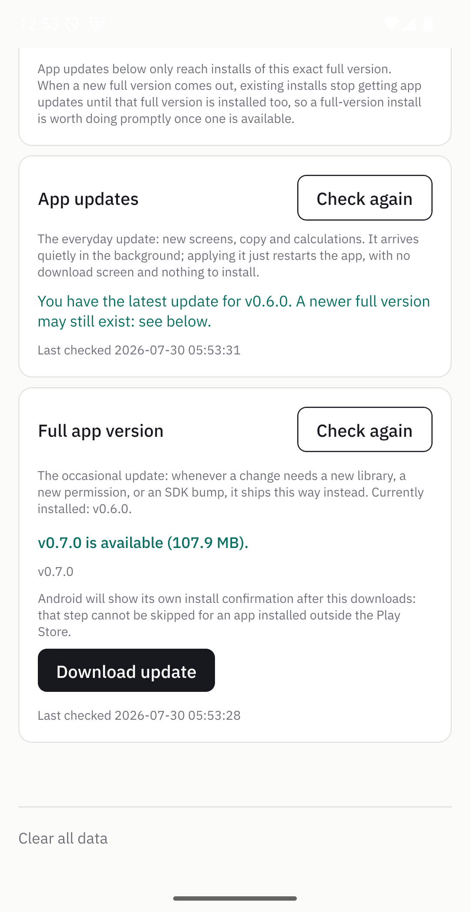
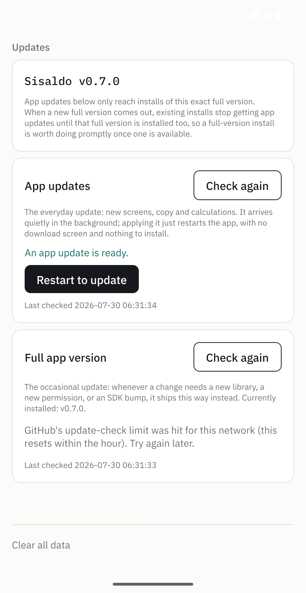
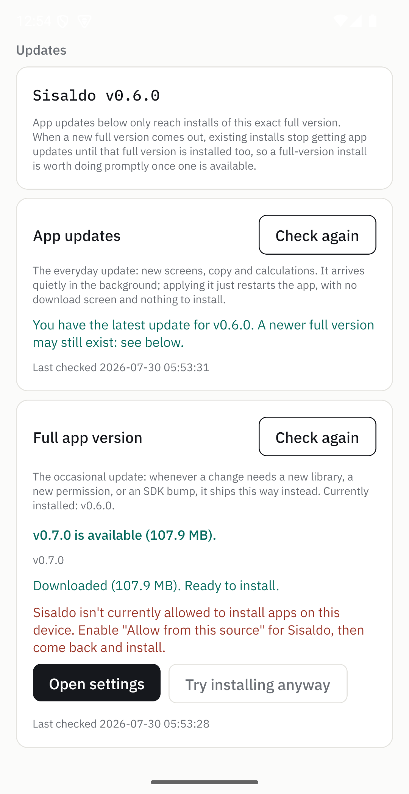
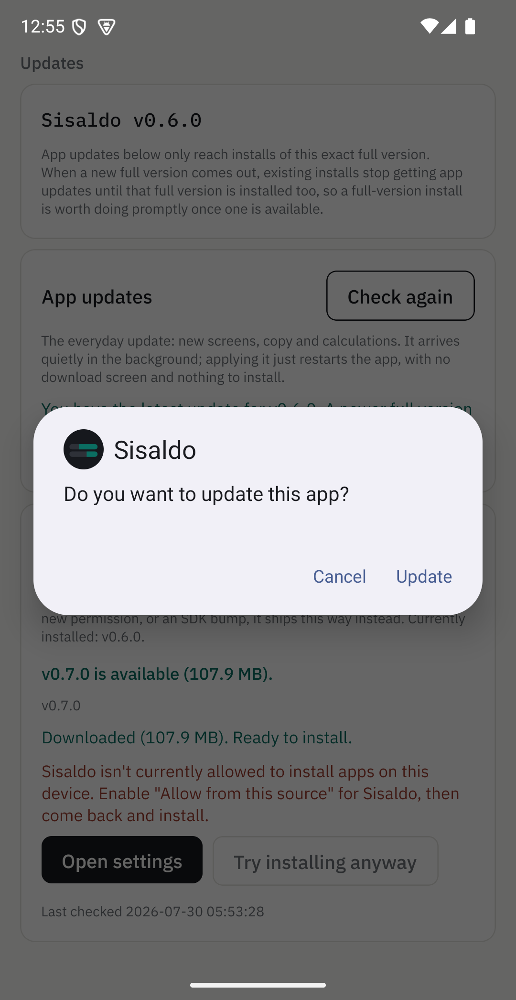
9TroubleshootingPemecahan masalah
The app and my statement disagree
Aplikasi dan tagihan saya tidak cocok
Check three things before assuming a bug. First, whether the difference is exactly a pending entry, in which case see section 6.1. Second, whether a fee is missing, since banks add those without telling you. Third, whether you are comparing availability with what you owe, which are different questions (section 6.2). Then write what the bank says into the card's reconciliation note, so next time you know when they last agreed.
Periksa tiga hal sebelum menyimpulkan ada bug. Pertama, apakah selisihnya tepat sebesar satu entri pending; kalau ya, lihat bagian 6.1. Kedua, apakah ada biaya yang belum tercatat, karena bank menambahkannya tanpa memberi tahu. Ketiga, apakah Anda membandingkan sisa limit dengan tagihan, padahal keduanya pertanyaan berbeda (bagian 6.2). Setelah itu, tulis angka dari bank ke reconciliation note kartu tersebut, supaya lain kali Anda tahu kapan terakhir keduanya cocok.
"Sisaldo isn't allowed to install apps on this device"
"Sisaldo isn't allowed to install apps on this device"
Android has not given Sisaldo permission to install an APK. Tap Open settings
and enable "Allow from this source", then come back and install. The downloaded file is
kept, so nothing needs downloading again.
Android belum memberi Sisaldo izin memasang APK. Ketuk Open settings lalu
aktifkan "Allow from this source", kemudian kembali dan pasang. Berkas yang sudah diunduh
tetap tersimpan, jadi tidak perlu mengunduh ulang.
An update check fails
Pemeriksaan pembaruan gagal
The app reports the reason rather than hiding it. Being offline is an expected state, not an error, and everything else in the app keeps working regardless. A failed check never means your data is at risk.
Aplikasi menampilkan alasannya, bukan menyembunyikannya. Sedang offline adalah keadaan yang wajar, bukan kesalahan, dan seluruh fitur lain tetap berjalan. Pemeriksaan yang gagal tidak pernah berarti data Anda berisiko.
I want to start over
Saya ingin mulai dari awal
Settings → System settings →
Clear all data empties everything. Export a backup first if there is any
chance you will want it, because this cannot be undone.
Settings → System settings →
Clear all data mengosongkan semuanya. Ekspor cadangan dulu kalau ada
kemungkinan Anda membutuhkannya, karena langkah ini tidak bisa dibatalkan.